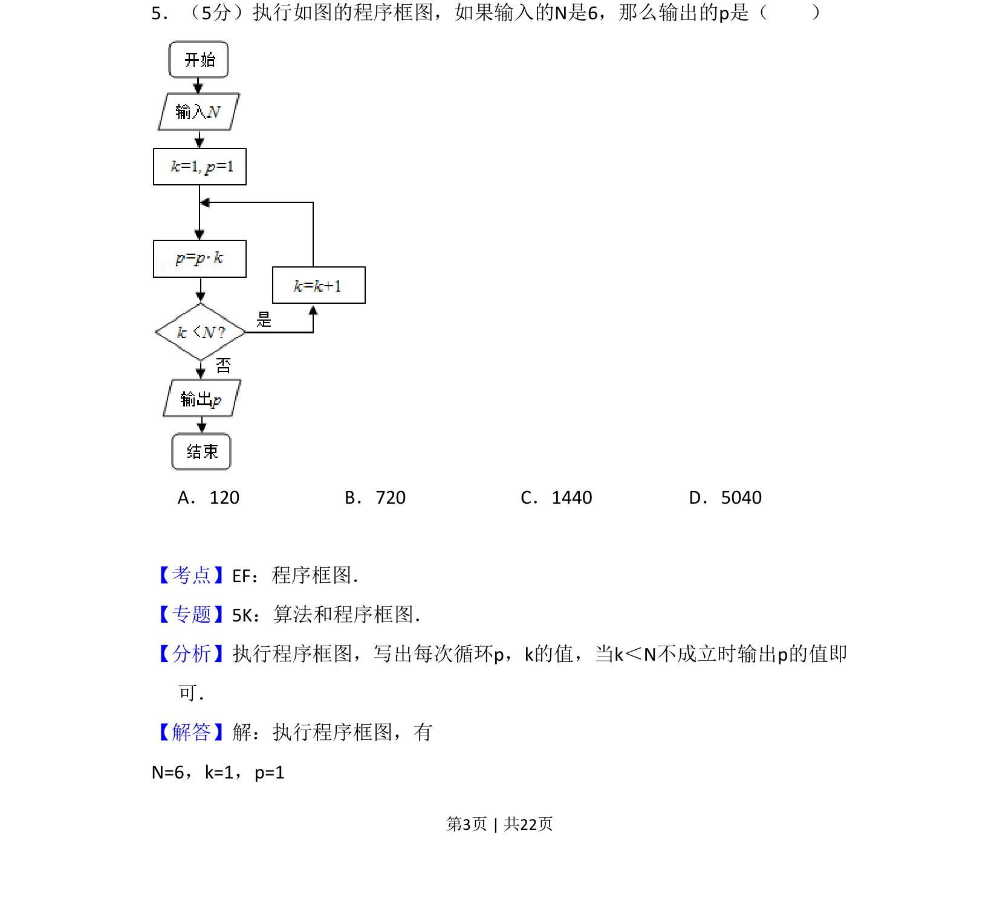
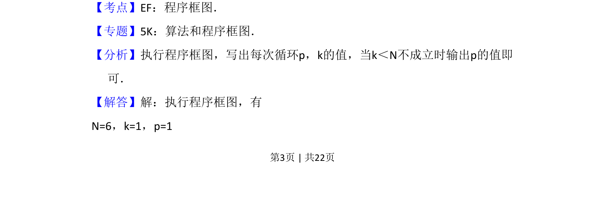
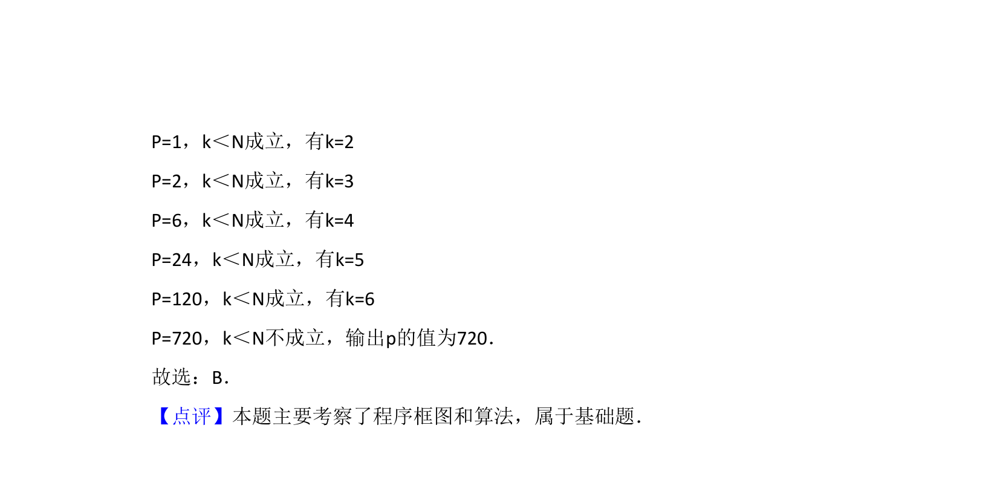

考点：程序框图 循环结构 算法

一道程序框图题，给定输入 N=6，要求根据循环流程计算输出 p 的值。


📄 原 PDF 第 3 页：
素材/真题/吉林/2008-2024·（吉林）数学高考真题/2011年高考数学试卷（文）（新课标）（解析卷）.pdf
5．（5分）执行如图的程序框图，如果输入的N是6，那么输出的p是（ ） A．120 B．720 C．1440 D．5040
【考点】EF：程序框图．菁优网版权所有 【专题】5K：算法和程序框图． 【分析】执行程序框图，写出每次循环p，k的值，当k＜N不成立时输出p的值即 可． 【解答】解：执行程序框图，有 N=6，k=1，p=1